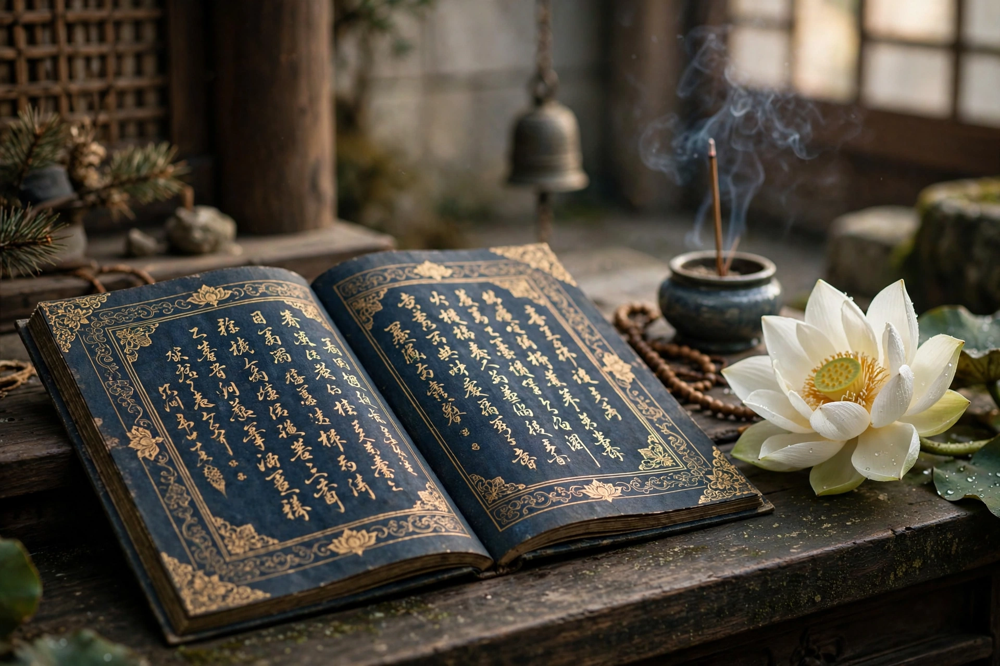

From Wikipedia, the free encyclopedia

The Lotus Sūtra (Sanskrit: Saddharma Puṇḍarīka Sūtra, "Sūtra on the White Lotus of the True Dharma") is one of the most influential and venerated Mahāyāna Buddhist scriptures. It is the central scripture of the Tiantai and Tendai schools and profoundly shaped Nichiren Buddhism, Zen, and Pure Land Buddhism. Composed in stages, probably between the 1st century BCE and the 2nd century CE in South Asia, the sutra was translated into Chinese most famously by Kumārajīva in 406 CE, the version that became canonical throughout East Asia.
The sutra's central doctrine is that the Buddha's earlier teachings — of the śrāvaka (disciple), pratyekabuddha, and bodhisattva paths, the "three vehicles" — were upāya, "skillful means": provisional devices adapted to the capacities of their hearers. In reality, the sutra proclaims, there is only One Vehicle (the Buddha-vehicle), and all beings without exception possess the buddha-nature and are destined for full Buddhahood. Chapter 2 ("Expedient Means") makes this announcement, and the famous parable of the burning house in Chapter 3 illustrates it: a father lures his children out of a burning house by promising three kinds of carts, then gives them all one magnificent cart — just as the Buddha's provisional teachings lead beings to the single goal of enlightenment.
Chapter 16 ("The Life Span of the Thus Come One") reveals that Śākyamuni Buddha did not attain enlightenment for the first time under the Bodhi tree; he has been awakened since the inconceivably remote past and remains present in the world, his apparent death (parinirvāṇa) itself a skillful means to keep beings from complacency. This doctrine of the eternal Buddha deeply influenced East Asian Buddhist theology.
The sutra is celebrated for its literary parables: the burning house, the prodigal son (the lost son who unknowingly carries a jewel in his robe), the conjured city, the medicinal herbs, and the dragon king's daughter who attains Buddhahood — a passage often cited for the sutra's universalism. Chapter 25, devoted to the bodhisattva Avalokiteśvara (Guanyin/Kannon), circulated independently as the "Universal Gateway" chapter and became one of the most popular texts in East Asian Buddhism.
In China, Zhiyi (538–597) built the Tiantai school's whole system around the Lotus, ranking it the supreme teaching of the Buddha. Its Japanese Tendai counterpart trained the founders of most Kamakura Buddhist schools. In the 13th century, Nichiren taught exclusive devotion to the sutra, expressed in the chant Namu Myōhō Renge Kyō ("Homage to the Lotus Sutra"), from which the modern lay movements Soka Gakkai and others descend. The sutra's ecumenism, its promise of Buddhahood for everyone — including women and the wicked Devadatta — and its vivid imagery have made it among the most beloved of all Buddhist texts.